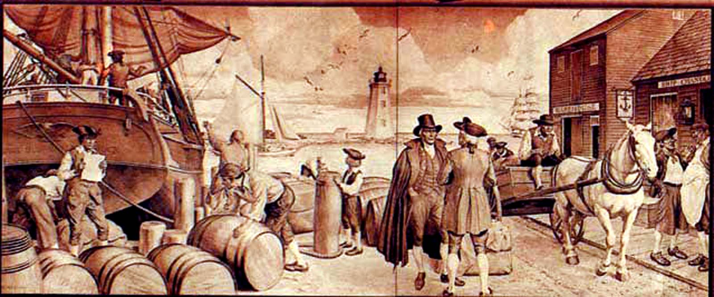
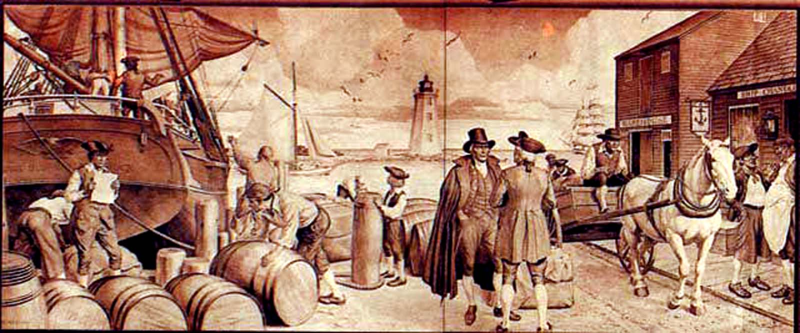

1630-1772
1630-1772 [The first page includes genealogical notes on the Wheeler family, which have been arranged in the "Family Index."]
The first Wheeler that came into America settled in Con- cord (Massachusetts) about the year 1630. He had several sons & one of them came to Black Rock and at the old Lot built a stone house with a flat roof of Plank on which he mounted two four-pounders,—one pointed towards the Mouth of the Harbor & the other at an Indian fort situated at the head of the harbor, now known by the name of Old Fort.
This place the Fairfield Indians had built for their defence against some of the interior tribes with whom they were perpetually at War. It was composed of Palisades joined together & at each corner a room was built out with portholes like the following figure:
It contained about an acre of land & was garrisoned by about 200 Indians fond of War & often solliciting the Old Indian for leave to destroy the English. Once they obtained it on condition of pulling up a large neighboring White Oak Tree-
Well, to work they went & stript off its branches, but still the trunk baffled their utmost endeavours.
"Thus" says the Old , "will be the end of your War—you may kill some of their papooses, but the old plaguey Stump t'other side of the great Waters will remain & send out more branches—"
It happened one time that 6 of the Mohawk tribe, being closely pursued by the Fairfield Indians were secreted by one of the Waklins of Stratfield under some sheaves of Flax, & being directed homewards, were the occasion of the long Amity that subsisted between that tribe and the English.—
Many remains of the Indians are daily discovered, as Stone arrows, hatchets, etc. In Greenfield is a Samp Mortar made in the solid rock, containing nearly half a Bushel.
A pot has been seen in Weston of Stone & a stone bottle was found very curiously made, holding about half a pint, at Black Rock some years since. A great part of their food seems to have been Oysters, Clams &c. by the vast beds of Shells that are frequently dug out of the Earth.
My Grandfather had (I learn from tradition, there being no journals left of those times) many brothers & sisters, 14 in all.
Hannah, the youngest, was a very intelligent person— about 18 years of age. She was courted & expected to be married to Ringfield a Captain of a ship who gave her a gold ring, 3 pair of green silk stockings &c, but he being gone for so long, she was courted & married by Sam Wheeler.
On the day of their marriage, a Ship appearing taken for Ringfield by the Bride, she burst into tears & declared she would not be married, & half dressed hid in a hole in the back kitchen of my grandfather who, with horsewhip in hand, dragged her out, but she ran around him as he attempted to strike.—
They finally concluded to dispatch a boat to see who com- manded said ship. Finding it was not Ringfield (who was lost) she was married, but never could the Capt. be erased from her mind, as (I am told by a person who was eye wit- ness) she used frequently at 75 years of age to weep over his presents.